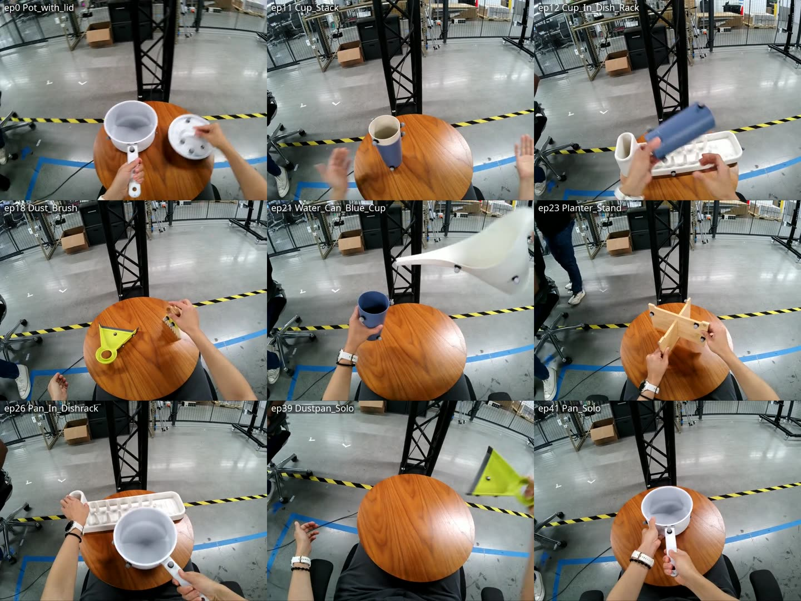
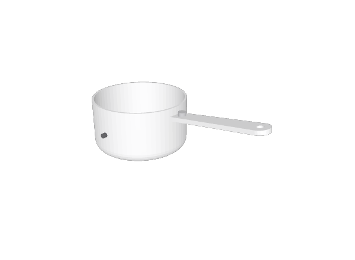
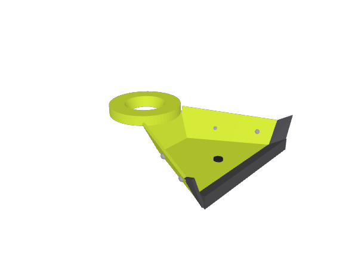
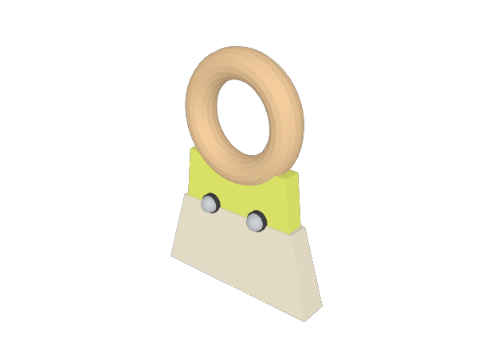
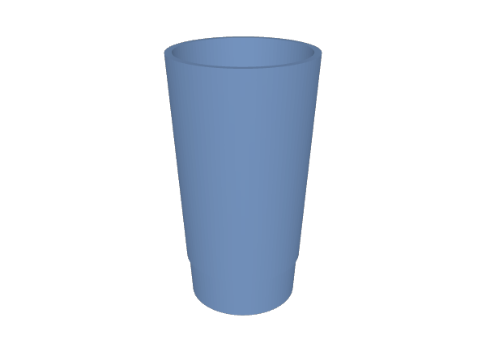
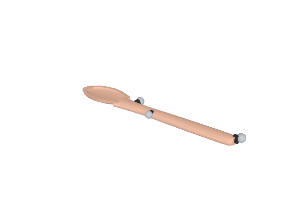

From human video
to robot learning.
We are The Simsons. We turn egocentric videos of people handling everyday objects into simulation-ready data: object meshes, object and hand motion, and robot policies trained on them.
This page collects our projects. First up: our entry to the NVIDIA Video-to-Data Challenge 2026.
NVIDIA Video-to-Data Challenge 2026 · Track 3
Ego2Sim: egocentric video to simulated manipulation
Track 3 gives a short egocentric video of a person manipulating one or two objects, recorded with a three-camera head rig. From the video alone, we reconstruct each object's mesh, its 6-DoF trajectory and the person's hand motion, retarget the hands to floating Sharpa Wave robot hands, and train one reinforcement-learning policy per episode in simulation (FlashSAC in FlashCHORD).
The score is how closely the objects moved by the policy follow the person's original object motion (ADD-AUC), measured with the challenge's official evaluator on 20 evaluation episodes.

The pipeline
Every stage runs from the egocentric video. Upstream code is the challenge's pinned video_to_data; our stages wrap or replace parts of it.
- Stereo depthSGBM on the undistorted head cameras; FoundationStereo depth for object tracking.
- SegmentationSAM 2 masks for every object and hand, prompted from object detections and WiLoR hands.
- Depth fusion & camera motionMoGe depth fused with stereo; stereo visual odometry for the head.
- Hands3D MANO hands per frame, repaired, with occluded grasps carried along with the object.
- Object meshesAgentSTAR: a Claude agent models each object from primitives in Blender, checked against the video; best mesh per object.
- 6-DoF object trackingFoundationPose on FoundationStereo depth with 16 pose hypotheses and a static start.
- Simulation referenceHands retargeted to floating Sharpa Wave hands, a table support, all objects in one scene.
- Reference cleaningSymmetric spins removed, look-alike flips unwrapped, physics settle, overlapping objects pushed apart.
- PoliciesOne FlashSAC policy per episode, best checkpoint by ADD-AUC over 64 simulated worlds.
Reconstructed objects
Meshes built by our AgentSTAR harness, at metric scale, as used in simulation. Click one to rotate it in 3D.






Hand tracking
The upstream hand stage gets hand shape right but places hands about 26 cm too far from the camera, because its depth comes from a single image. Our multi-view hand tracker builds on HaWoR, moves each hand onto keypoints triangulated from two head cameras (stereo depth where there are none) and falls back to a per-frame HaMeR hand wherever HaWoR's hand disagrees with the image.
Measured on the 20 public Track 3 episodes against a reference triangulated from all three head cameras; the second chart uses a camera the methods do not see.
3D joint error
Held-out camera accuracy
Show as a table
| Method | 3D joint error (mm) | Depth bias (mm) | Held-out PCK@10 | Coverage |
|---|---|---|---|---|
| V2D baseline (HaMeR + MoGe depth) | 263.4 | +259.6 | 13.8 % | 100 % |
| HaWoR | 121.1 | +109.3 | 21.1 % | 93.7 % |
| EgoFound3R | 119.2 | +107.7 | 16.6 % | 50.0 % (10 fps output) |
| HaWoR + stereo depth | 53.2 | +15.8 | 24.8 % | 93.7 % |
| HaMeR + stereo depth | 49.5 | +6.7 | 23.8 % | 100 % |
| Multi-view tracker + HaMeR fallback (ours) | 47.5 | +7.5 | 33.5 % | 97.9 % |
Policies and the final submission
Per-episode S0 policies
One FlashSAC policy per evaluation episode, trained for 96.8M steps on that episode's reconstructed reference with pickup and object-perturbed resets. For each episode we kept the reconstruction version (v1 or v2) whose policy tracked its reference better.
policy_s0/Last-day fixes: 0.609 → 0.651
Scoring each episode on its own exposed three weak ones: a spoon tracked upside down (flipped and retrained), a reference whose hands never reached the objects (extra pickup resets), and one episode where the earlier reference version did better.
policy_s0/probe/Validation against motion capture
Every pipeline change was accepted or rejected on public episodes with motion capture. The v2 reconstruction changes raised the reference-only AUC from 0.77 to 0.83 on 9 of them.
scripts/public_chain_validate.shExperiment: shared grasp + per-episode movement
A single behaviour-cloned grasp policy shared across episodes, with a per-episode wrist policy. Grasps transfer between known episodes, but it stayed below the per-episode policies, so it is not in the submission.
policy_gm/Code
Everything above is in the-simsons/ego2sim-nvidia-v2d:
reconstruction stages in tools/ and scripts/, the mesh agent in
agentstar_harness/, the hand-tracking benchmark and pipeline stage in handtracking/,
and policies in policy_s0/ and policy_gm/. It runs against
nvidia-isaac/video_to_data at the evaluator's pinned commit.
Coming up